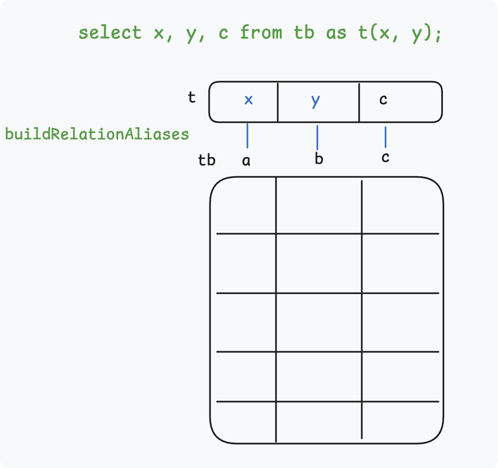

语义分析 parse_analyze_fixedparams¶
Overview¶
语义分析任务¶
语义分析: 将以 RawStmt 节点为根的原始解析树(Parse Tree)，转换为 Query 节点树
-
相关函数:
parse_analyze_fixedparams -
核心流程
RawStmt/parsetree ----> parse analysis（analyze.c） + ParseState ----> Query
-
关键结构：
-
ParseState: 语义分析的工作上下文（working context），转换ParseTree为Query结构的临时结构，生成Query后丢弃
/* State information used during parse analysis */
struct ParseState
{
const char *p_sourcetext; /* source text, or NULL if not available */
List *p_rtable; /* range table so far */
List *p_joinexprs; /* JoinExprs for RTE_JOIN p_rtable entries */
List *p_joinlist; /* join items so far (will become FromExpr node's fromlist) */
List *p_namespace; /* currently-referenceable RTEs (List of ParseNamespaceItem) */
ParseNamespaceItem *p_target_nsitem; /* target rel's NSItem, or NULL */
int p_next_resno; /* next targetlist resno to assign */
/* ... */
};
Query
typedef struct Query
{
NodeTag type;
CmdType commandType; /* select|insert|update|delete|merge|utility */
/* where did I come from? */
QuerySource querySource pg_node_attr(query_jumble_ignore);
/* ... */
Node *utilityStmt; /* non-null if commandType == CMD_UTILITY */
/* ... */
List *rtable; /* list of range table entries */
/* ... */
List *targetList; /* target list (of TargetEntry) */
/* ... */
Node *havingQual; /* qualifications applied to groups */
/* ... */
} Query;
查询分类¶
transformStmt 处理三种不同查询 select(select into 会被视为 create table as，在 transformOptionalselectInto 中处理)
exec_simple_query - pg_analyze_and_rewrite_fixedparams - pg_analyze_and_rewrite_fixedparams
transformTopLevelStmt - transformOptionalselectInto
transformStmt
| transformValuesClause /* values (1, 2); */
| transformselectStmt /* select a, b from tb; */
| transformSetOperationStmt /* select a, b from tb union values (1, 2);*/
DROP TABLE IF EXISTS tb;
CREATE TABLE tb AS select n AS a, n * 10 AS b, n * 100 AS c FROM generate_series(1, 5) AS n;
select a, b FROM tb where a = 2;
对象层级关系¶
| 层级 | 中文名称 | 核心作用 | 唯一标识 | 关联系统表 |
|---|---|---|---|---|
| Database | 数据库 | 最高级隔离单元（独立的系统表集合） | OID |
pg_database |
| Schema | 模式 / 名称空间 | 数据库内的逻辑隔离单元 | OID |
pg_namespace |
| Relation | 关系 | 模式内的核心对象（表/索引/视图等） | OID |
pg_class |
| Column | 字段 | 关系内的最小数据单元 | OID+attrnum |
pg_attribute |
参考文档：
- https://postgres-internals.cn/docs/chapter01/
- https://www.interdb.jp/pg/pgsql01/02.html
- download pdAdmin 4
查询分析总体流程¶
transformselectStmt
transformselectStmt
transformFromClause /* from tb */
transformTargetList /* select a, b */
transformWhereClause /* where a = 2 */
transformSortClause
transformGroupClause
transformDistinctClause
transformLimitClause
transformWindowDefinitions
transformLockingClause
/* ... */
分析表名 from tb¶
函数: transformFromClause(pstate, stmt->fromClause); + transformFromClauseItem
任务: Process the FROM clause and add items to the query's range table, joinlist, and namespace.
表的多种抽象形式¶
- 文本标识:
tb --- Identifier —— RangeVar - 语法分析:
RangeVar --- selectStmt::fromClause - 语义分析:
RangeTableEntry --- ParseState::p_rtable --- Query::p_rtable - 名称空间:
NamespaceItem --- ParseState::p_namespace - 优化结构:
RelOptInfo: TODO - 关系缓存:
Relation ---- relation_open() - 持久数据:
pg_class+pg_attribute,pg_attrdef,pg_index,pg_constraint,pg_rewrite, ...
SQL: FROM tb
↓
RangeVar —— 名字
↓
RangeTblEntry —— 语义对象（作用域）
↓
Var —— 列绑定（编号）
↓
RelOptInfo —— 优化对象（代价）
↓
Relation —— 物理对象（存储）
Query查询树中的关键抽象: Range Table(范围清单) : A range table is a List of RangeTblEntry nodes.
typedef struct Query
{
/* ... */
List *rtable; /* list of range table entries: RangeTblEntry */
/* ... */
} Query;
typedef struct RangeTblEntry
{
RTEKind rtekind; /* Range kind */
Oid relid; /* OID of the relation */
char relkind; /* relation kind */
/* ... */
} RangeTblEntry;
typedef enum RTEKind
{
RTE_RELATION, /* ordinary relation reference */
RTE_SUBQUERY, /* subquery in FROM */
RTE_JOIN, /* join */
/* ... */
} RTEKind;
transformFromClause
transformFromClauseItem
transformTableEntry
addRangeTableEntry
RangeVar -> parserOpenTable() -> Relation
/* build RTE */
pstate->p_rtable = lappend(pstate->p_rtable, rte);
buildNSItemFromTupleDesc
- 通过语法分析得到的表名称被封装在
RangeVar变量中 parserOpenTable语义分析的重要任务: 访问元数据检索Relation- 将
relid添加到RangeTblEntry中并构建名称空间Item以供后续分析列
检索表结构Relation¶
parserOpenTable 如何根据 RangeVar(表名) 找到 Relation 结构？
- 核心缓存定义
RelCache (关系描述符缓存)
- 本质：表的句柄，以动态哈希表存储
RelationData(重型对象) - 内容：封装元组描述、锁信息及存储状态，是内核操作表的物理入口
- 约束：底层物理检索仅支持
relid唯一键【无法直接通过RangeVar检索】
SysCache (系统元组缓存)
- 缓存：建立在系统表唯一索引（常用索引）之上的内存哈希缓存
- 封装：
CatCTup，封装了来自基表的完整元组（Heap Tuple） - 优势：无需“回表”。一旦命中，直接返回指向内存副本的指针，性能比索引扫描快数十倍
pg_class上的索引：
"pg_class_oid_index" PRIMARY KEY, btree (oid)
"pg_class_relname_nsp_index" UNIQUE CONSTRAINT, btree (relname, relnamespace)
对应的SysCache缓存：
2 parserOpenTable 执行逻辑
-
获取
relid(RangeVar->relid) -
由于
RelCache不支持字符串查找，内核首先访问SysCache（具体为RELNAMENSP缓存） -
利用
RangeVar提供的表名和 Schema 信息进行匹配，获取该表的唯一身份 id：relid -
查找表结构 (
relid->Relation) - 拿到
relid后，内核转而访问RelCache - 通过
relid这一唯一键检索RelationIdCache哈希表
RangeVar --> relid --> Relation
parserOpenTable /* parser/parse_relation.c: parser support routines dealing with relations */
table_openrv_extended /* access/table/table.c: Generic routines for table related code*/
relation_openrv_extended /* access/common/relation.c: Generic relation related routines */
relOid = RangeVarGetRelidExtended /* catlog/namespace.c: searching namespaces */
relation_open(relOid) /* access/common/relation.c: open any relation by relation OID */
Relation rd;
RelationIdCacheLookup /* utils/cache/relcache.c: Lookup a reldesc by OID */
RelationIncrementReferenceCount
return rd;
RangeVarGetRelidExtended 内部查找过程
RangeVarGetRelidExtended
RelnameGetRelid
get_relname_relid /* utils/cache/lsyscache.c: routines for common queries in system catalog cache */
GetSysCacheOid /* utils/cache/syscache.c: System cache management routines*/
tuple = SearchSysCache /* get tuple */
SearchCatCache /* utils/cache/catcache.c: System catalog cache for tuples matching a key*/
SearchCatCacheInternal /* hash and iterate */
return heap_getattr(tuple, oidcol, ...);
系统目录缓存管理抽象层次：
lsyscache.c: 封装syscache的轻量 APIsyscache.c: 逻辑索引缓存管理层catcache.c: 底层元组缓存实现
系统表缓存 SysCache¶

https://cloud.tencent.com/developer/article/2000765?from_column=20421&from=20421
添加名称空间 buildNSItemFromTupleDesc¶
为什么 PG 需要“名称空间” (NSItem)？
两种别名方式¶
-
select a as x, b as y from tb; -
select x, y, c from tb as t(x, y);（仅 PG 支持）
在 PostgreSQL 中，这两种方式分别对应 “投影别名” 和 “数据源别名”。
| 方式 | 语法示例 | 生效阶段 | 核心作用 |
|---|---|---|---|
| 投影别名 | select a AS x ... |
输出层 (Output) | 修饰性：重命名输出列 |
| 数据源别名 | FROM tb AS t(x, y) |
输入层 (Input) | 结构性：重定义表结构标识 |
为什么需要数据源别名?¶
- 解决“无名数据”的定义问题
- 简化复杂查询的引用
- 表结构标识重命名
buildRelationAliases 合并用户定义的别名和原列名形成完整的别名结构 Alias 保存到 RTE 的 eref 字段

分析列名 select a, b¶
qry->targetList = transformTargetList
transformTargetList /* parser/parse_target.c */
transformTargetEntry
transformExpr --> expr/* parser/parser_expr.c */
transformExprRecurse
transformColumnRef
colNameToVar /* parser/parser_relation.c*/
scanNSItemForColumn
scanRTEForColumn /* Scan the nsitem's column names (or aliases) for a match */
foreach(c, eref->colnames) /* Scan the user column names (or aliases) for a match */
specialAttNum(colname) /* quick check to see if name could be a system column */
SystemAttributeByName /* ctid, xmin, cmin, xmax, cmax, tableoid */
SearchSysCacheExists2
makeVar
makeTargetEntry
tle->expr, tle->resno, tle->resname
return TargetEntry
FigureColname
makeTargetEntry /* creates a TargetEntry node */
分析过滤条件 where a = 2¶
qual = transformWhereClause
操作符元数据查询，pg_operator 元数据中重点关注
select * from pg_operator where oprname = '=';
select * from pg_operator where oid = 96;
select * from pg_type where oid = 23;
prname: 操作符名称oprleft: 左操作符类型oidoprright: 右操作符类型oidoprcode: 操作符的函数实现
语义分析过程
transformWhereClause
transformExpr
transformExprRecurse
transformAExprOp
lexpr = transformExprRecurse(pstate, lexpr);
transformColumnRef
rexpr = transformExprRecurse(pstate, rexpr);
make_const
make_op
oper(pstate, opname, ltypeId, rtypeId, false, location);
make_oper_cache_key
find_oper_cache_entry
result->opno = oprid(tup); /* pg_operator: oid=96 | oprname='=' | oprcode='int4eq' */
result->opfuncid = opform->oprcode; /*op_proc: oid=65 | proname='int4eq' */
result->args = args
qry->jointree = makeFromExpr(pstate->p_joinlist, qual);